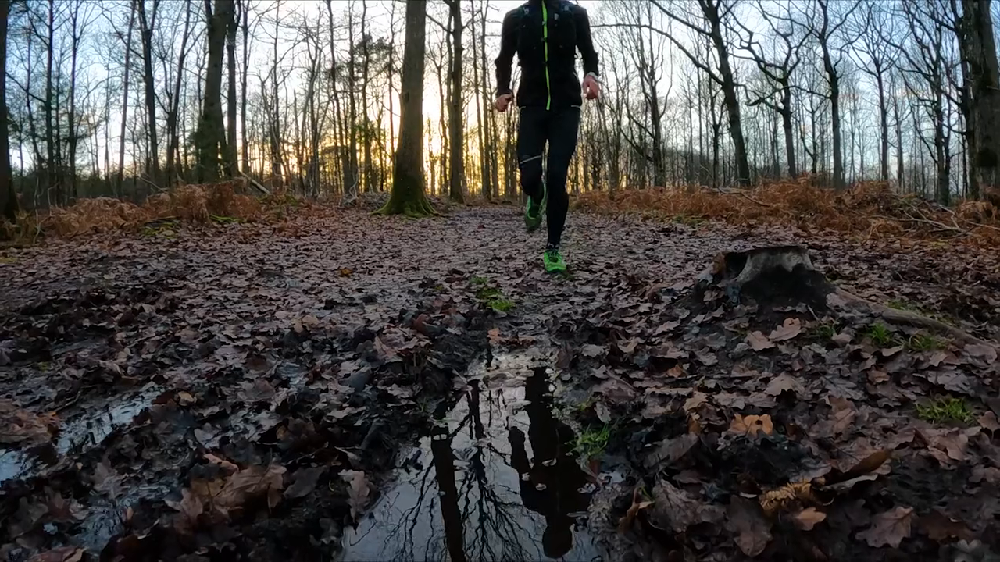

Data Scientist · Trail Runner · Problem Solver
Scroll to explore ↓
Like a trail run through uncharted terrain, my career has been about finding the best path forward — navigating obstacles, building momentum, and never losing sight of the finish line. Every project is a new trail to explore.
Every career is a race — some stretches are uphill grinds, others are exhilarating descents. Follow the trail of my favourite ultra, the Wildstrubel in the Swiss Alps, as it maps to my professional journey.
Wildstrubel Ultra · 69 km · 4246m elevation gain
Every career is a race — some stretches are uphill grinds, others are exhilarating descents. Follow the trail of my favourite ultra, the Wildstrubel in the Swiss Alps, as it maps to my professional journey.
